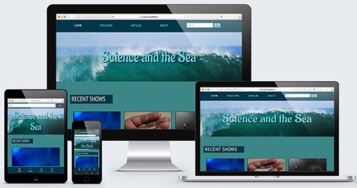

Case Study:
Science & the Sea
The Project
The Science and the Sea website was a project for my responsive design class at Anne Arundel Community College. The assignment was to redesign a website for a podcast of our choice. At the time, I didn't listen to any podcasts, so I found one that covered a topic I had some interest in: the ocean.
After making wireframes for each page at a mobile, tablet, and desktop (large) screen size, I moved on to programming the website. I started programming the website at a 320px width size. Excepting wearable devices, such as watches, a 320px screen size is a common enough width size for mobile devices. Using percentages for measurements and em's for font sizes, allowed my content to grow in a pre-determined way as the screen width grew. However, adjustments still needed to be made despite the default settings. I created three breakpoints — 526px, 950px, 1100px — that were determined by the content "breaking" or causing problems as the screen size grew wider.
Once the screen size hit 950px wide, I had to change the presentation of some of my content because images were too large and text was too wide. I gave my podcast and article previews a "content-block" class and set this to "display: inline-block." This worked but there was a lot of coding that had to go into it, and it wasn't necessarily the cleanest design either. However, it worked for what I needed it to do.
The Problems
As mentioned before, my code was a little messy and that was from creating problems for myself in the design. Originally, I had the Subscription block between the Podcast and Articles sections on the home page, and the Live Viewers block under the Articles section while the screen size was 949px or below. Upon the screen hitting 950px, the Subscription and Live Viewers blocks would move below all the content. I also had the navigation menu moving from a fixed position at the bottom of the page to the top for larger screen sizes. This was a lot of duplicated code that cluttered up the pages and relied on CSS and the display property to work. And it did, but this could cause problems for screen readers.
In addition, my elements using the class "content-block" were not always uniform or aligned properly as the screen size changed. After learning about CSS Grid, I thought it might solve some of the problems I'd noticed in my design.
Updates
I used CSS Grid instead of my "content-block" class and am much happier with the results. There's definitely more control than using "display: inline" but it's also a cleaner method, both in presentation and code.
I removed the duplicated code sections, as well. The Subscription and Live Viewer blocks are located at the end of the content no matter the screen size. The menu, or navigation, also only appears in a fixed position at the bottom of the page. It's not a conventional choice for large screens or desktops but I think it's clear to the user that it's the menu. The original mobile navigation menu used Bootstrap icons, but these were removed to prevent conflicts with the Bootstrap library. HTML Unicode/UTF-8 didn't have adequate substitutes so I removed them entirely. This allowed me to enlarge the link font size and add a little more space around the links, which I think makes the menu more user-friendly.
Most of the other fixes are minor style changes. I made sure the behavior when a link is hovered or focused on, as well as the look of a link, was more uniform throughout the website. In addition, I improved the look of a few call-to-action buttons to make them better fit the design.
After seeing how powerful and useful Grid is, I think I can use it fix up a couple of my other older projects, especially those that use a gallery layout.
View Science and the Sea website.
Return to website gallery.